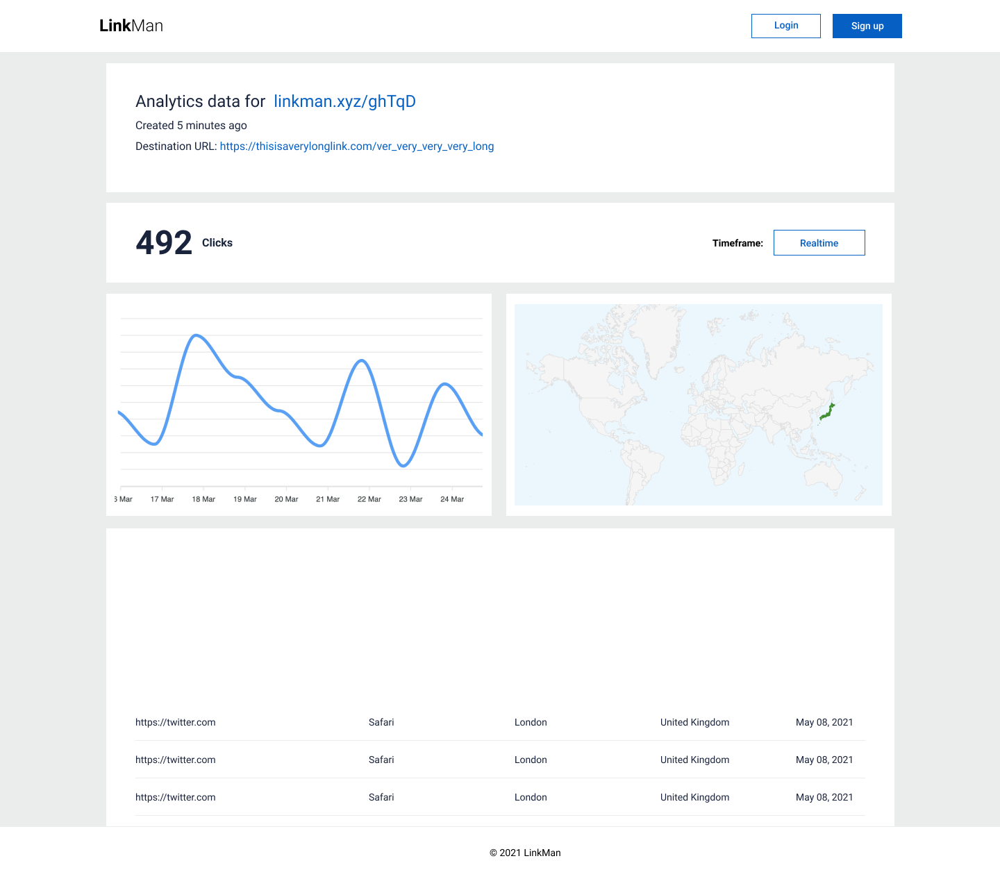

Scenario: Generate a map representing the countries from where visits originate from
Description: We track the ip address of every visit to a shortened url, and we'd like to generate a heatmap of sorts using that information.
We are able to map an ip address to its corresponding country, and we want to be able to generate a map with each country shaded according to the number of visits it has received from that country.
For example, if there are 10 visits from Malaysia and 100 visits from Canada, the map will show the Malaysian region in a lighter shade than that of Canada.
The map does not have to be updated in realtime. How frequently the map is updated is up to you, but let us know the granularity; 30 minutes is probably the maximum we can go for and any longer than that would likely be too outdated for our users.
While we only have countries mapped to the ip address, it would also be nice to be able to derive the city associated with that ip address (although we do not need this to be super accurate). That way we can drop a map pin on those cities from where the visits originate; this is optional though.
If using a third party service that needs an account and an API key, we'll need to either use your API key or provide instructions (preferably as an update to README.md) on how to obtain access so that future team members can continue development.
